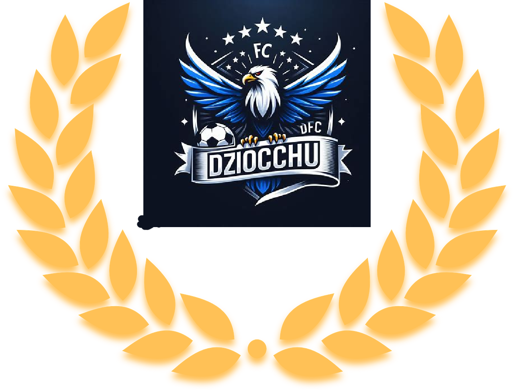

FC Dziochu
official
official

FC Dziochu
O klubie
FC Dziochu to pełen pasji i zaangażowania klub piłkarski, który z dumą reprezentuje swoją społeczność. Zespół ten został założony w malowniczej miejscowości Gorzów, zlokalizowanej wśród urokliwych krajobrazów. Klub ten to prawdziwa petarda na lokalnej scenie piłkarskiej, zdobywając serca kibiców swoją nieustępliwością i charakterem.
Herb FC Dziochu jest odzwierciedleniem ducha zespołu. Z dominującym kolorem Niebieskim, symbolizującym pasję i determinację, oraz białym, reprezentującym czystość zamiaru i wspólnotę. W centrum herbu znajduje się orzeł, otoczony rozświetlającym promieniem słońca, co podkreśla aspiracje klubu do świetlnej przyszłości i sukcesów na boisku.
Stadion FC Dziochu, znany jako "Boisko koło lidla", jest miejscem, gdzie marzenia stają się rzeczywistością. Zlokalizowany w sercu miasta, stadion ten jest świadkiem gorących emocji, ekscytujących meczów i wiernych kibiców, którzy tworzą niezapomnianą atmosferę.
Historia klubu FC Dziochu to pełna wyzwań podróż, zaczynając od skromnych początków na lokalnych boiskach aż po zaszczytne momenty na większych arenach. Zespół ten zawsze dąży do doskonałości, rozwijając młodych talentów i kultywując ducha fair play.
Wszystko to sprawia, że FC Dziochu nie tylko jest drużyną piłkarską, ale również integralną częścią społeczności, zjednoczoną wspólną miłością do piłki nożnej i dążeniem do osiągnięcia wielkich rzeczy.